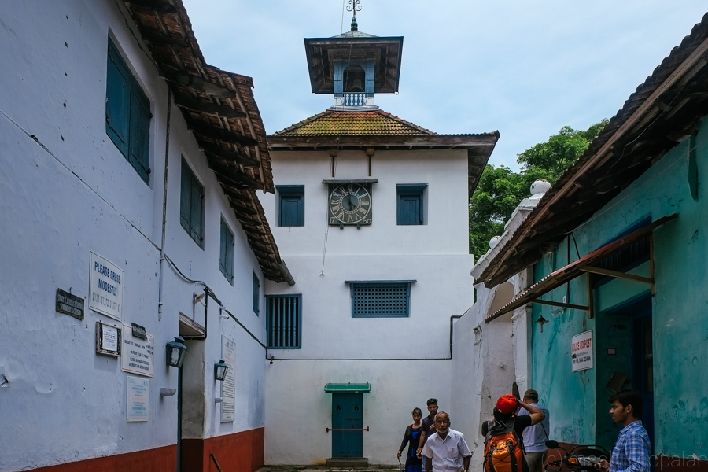

Eranakulam
(Est. - 1 Apr 1958)
With Thrissur to the North and the Arabian Ocean to the West; Idukki to the East and Alappuzha and Kottayam to the South; the district of Eranakulam has the port of Eranakulam as its district headquarters. This district boasts of a number of islands. Kochi a magnificent natural harbor stands on one such island.
These are two unique destinations to visit in Eranakulam.

Fort Kochi
